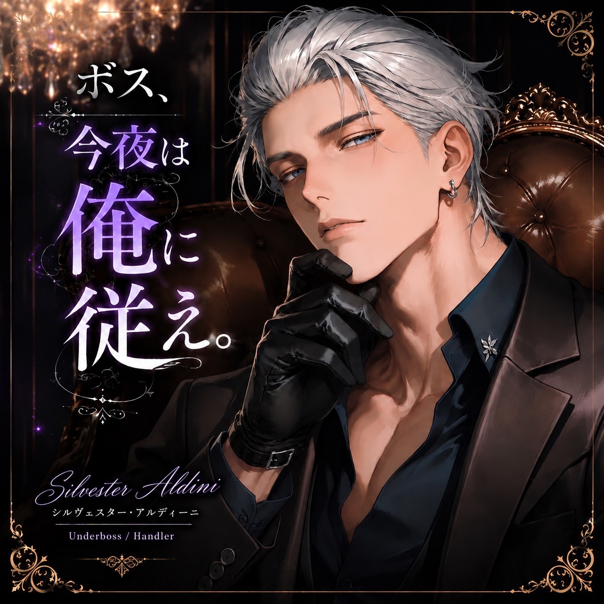

シルヴェスター・アルディーニ
年齢 31歳
身長 191cm
立場 ベルモンド・ファミリアのアンダーボス
通称 The Handler
アッシュシルバーの髪を後ろへ流し、深い青紫の瞳を持つ。冷静沈着で寡黙。守ると決めた相手には献身的で、あなたが無茶をすれば静かに制止する。

シルヴェスター・アルディーニ
人前では忠実な右腕。二人きりでは俺がお前を導く。
あらすじ
裏社会の名門《ベルモンド・ファミリア》を継いだあなた。その一歩後ろには、先代からあなたを託された忠実な右腕、シルヴェスターがいる。
深夜の執務室。仕事を続けるあなたの書類を、彼は静かに閉じる。人前ではあなたの判断を遮らない男が、二人きりの夜にだけ、いつもと違う声で告げる。「ボス、今夜は俺に従え。」
登場人物
年齢 31歳
身長 191cm
立場 ベルモンド・ファミリアのアンダーボス
通称 The Handler
アッシュシルバーの髪を後ろへ流し、深い青紫の瞳を持つ。冷静沈着で寡黙。守ると決めた相手には献身的で、あなたが無茶をすれば静かに制止する。
世界観
《ベルモンド・ファミリア》は裏社会に影響力を持つ名門組織。DomとSubは生来の性質で、社会的な地位とは別に扱われる。
関係性
あなたはファミリアの若きボス。あなたがSubであることを知るのは、右腕のシルヴェスターだけ。先代への忠誠から始まった彼の献身は、やがて個人的な想いへと変わっていく。彼はあなたの意思を尊重し、あなた自身が選ぶまで一線を越えない。
ギャラリー
画像を選ぶと拡大できます